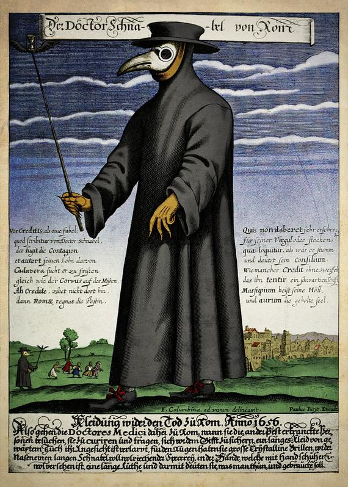

Minha Jornada Acadêmica
Linha do Tempo
● 2020 – Conclusão do Ensino Médio
● 2024 – Início do curso de Análise e Desenvolvimento de Sistemas
● 2025 – Início do Bacharelado em Engenharia da Computação
● 2020 – Início dos cursos livres em biologia molecular e microbiologia
Cursos Livres
Sou fascinada por biologia molecular e microbiologia, e isso vai além do estudo — inclusive nos meus nicks em jogos, como Yersinia e Antraz. Por exemplo, foi a bactéria Yersinia pestis a responsável pela Peste Negra, que devastou a Europa durante a Idade Média.

Médico da peste: figura icônica da pandemia bubônica no século XVII.
Idiomas
Além do português e do inglês, que domino com fluência, também possuo bom entendimento de romeno e latim — línguas que cultivo por pura curiosidade histórica.